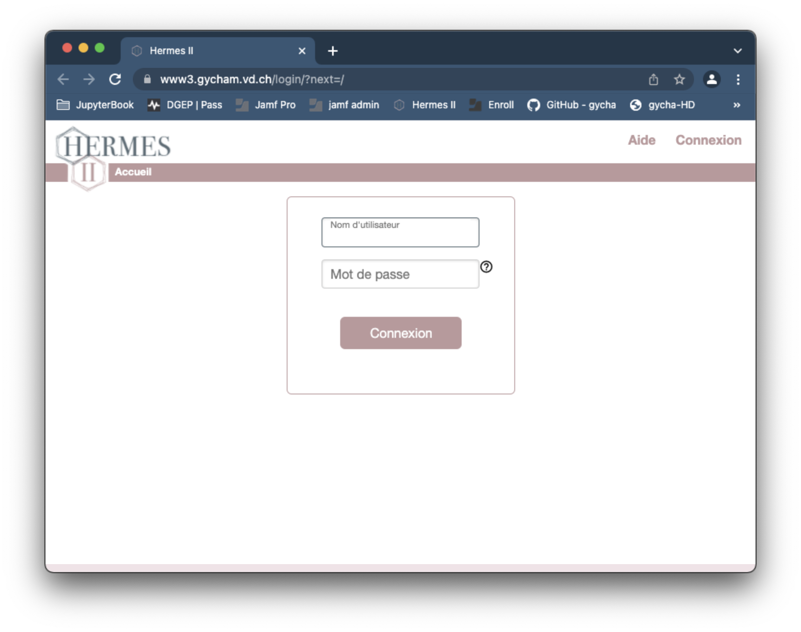
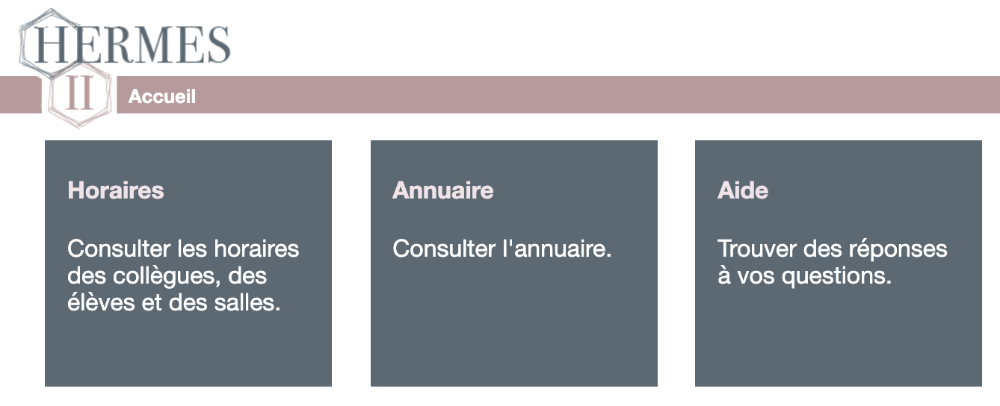
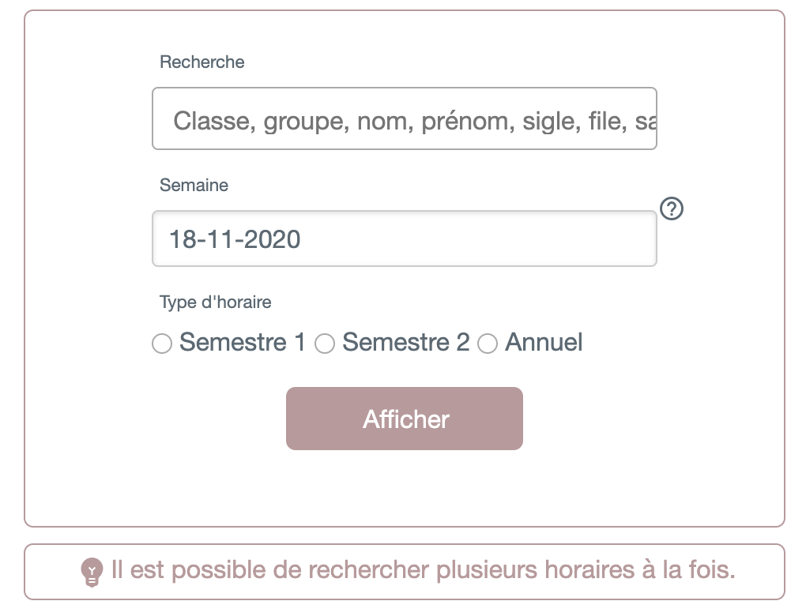
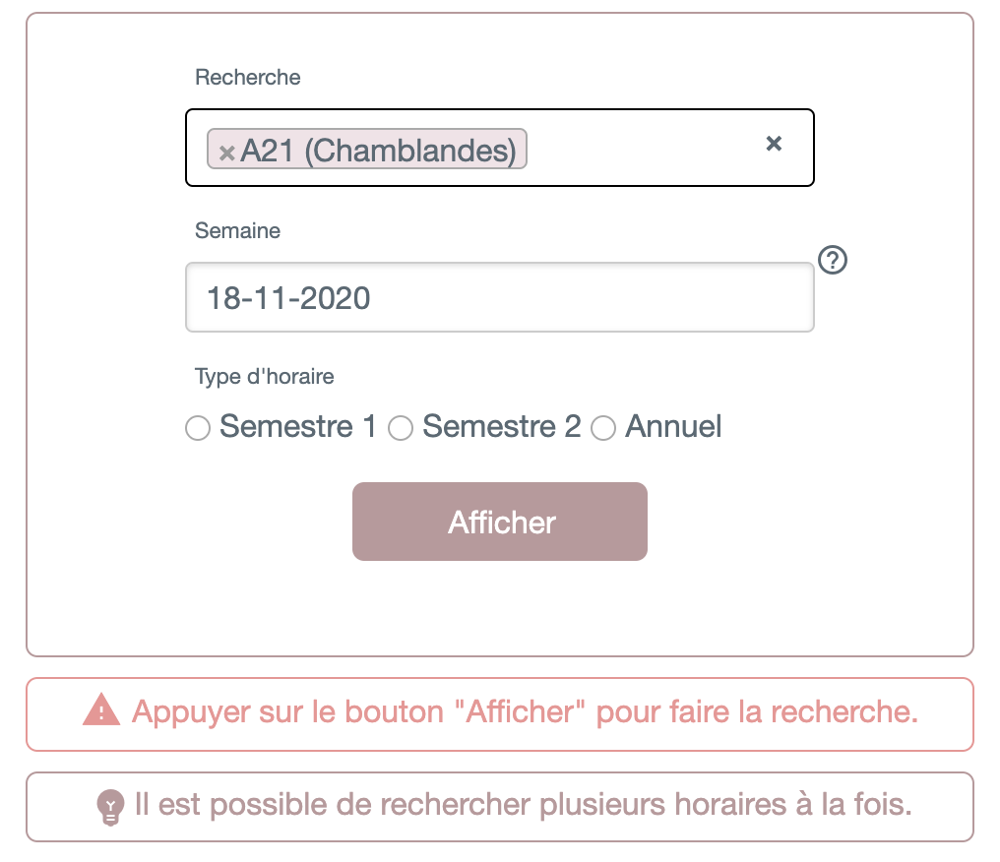
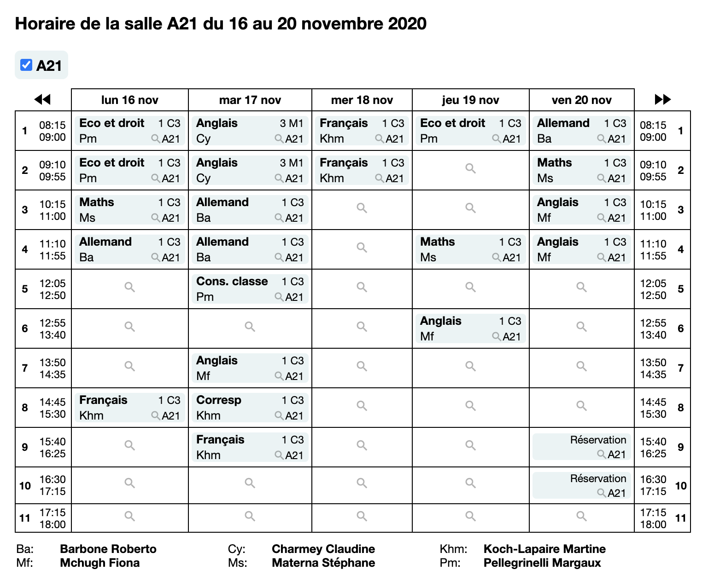
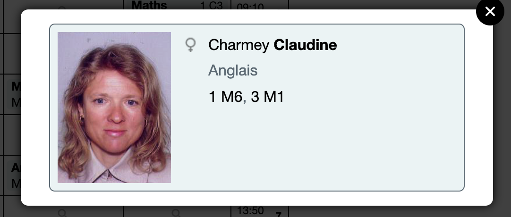
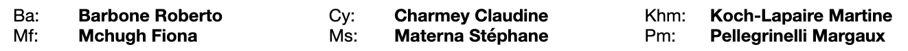
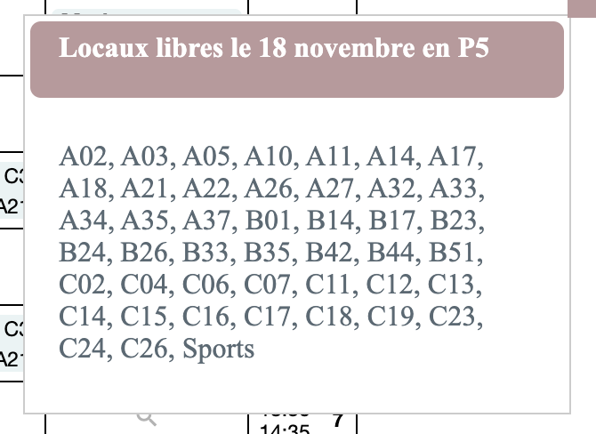
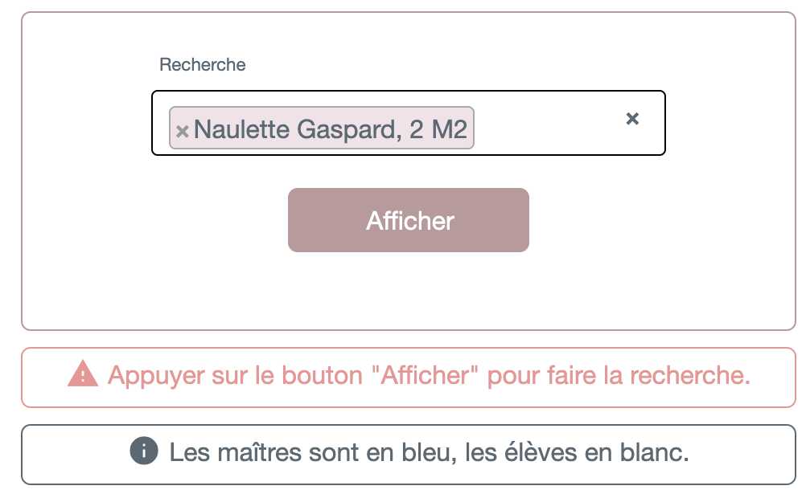
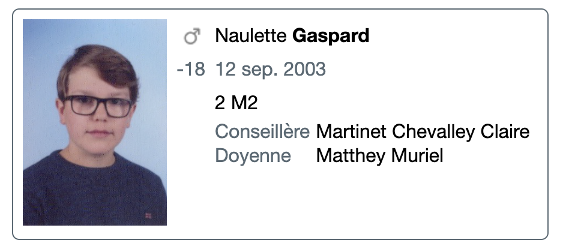

Hermes II¶
Hermes II est un outil qui vous sera fourni et qui vous permettra de rechercher des informations concernant les élèves, maîtres et classes du gymnase.
Hermes ne pourra être accédé uniquement à partir du réseau du gymnase. Son adresse est la suivante :
https://www3.gycham.vd.ch/gymnase/login/
Connexion¶
Une fois que vous êtes sur le site, vous devriez voir le formulaire suivant :
{kind=link}
Warning
Si le formulaire ressemble plutôt à ceci:
{image} images/fausse_connexion_hermes.png :width: 500px :name: fausse_connexion_hermes :align: center
C’est que vous êtes bien sur le site d’Hermes, mais à l’adresse: https://www3.gycham.vd.ch/login/?next=/
Et non: https://www3.gycham.vd.ch/gymnase/login/
Parfois, le raccourci ne marche pas et vous redirige à la mauvaise adresse.
Ensuite, rentrez votre identifiant et mot de passe de votre compte qui est dans l’AD. Sélectionnez, comme sur l’image ci-dessus, le champ Service pour la première combo box et Gymnase de Chamblandes pour la deuxième. Il suffit après cela d’appuyer sur le bouton Connexion.
Vous devriez ensuite vous trouver sur une page qui ressemble à ceci :
{kind=link}
Horaires¶
Vous pouvez ensuite consulter les horaires des élèves, maîtres et salles du Gymnase.
Après avoir cliqué sur Horaires, vous devriez voir le formulaire ci-dessous :
{kind=link}
Mettez dans le champ Recherche l’élève, maître ou salle que vous recherchez, par exemple comme ceci :¨
{kind=link}
Il est aussi possible de choisir un semestre ou une semaine spécifique.
Si vous appuyez sur Afficher, vous devriez voir un horaire qui s’est généré, comme suit:
{kind=link}
Sur cet horaire, vous pouvez retrouver des informations telles que quelle matière est enseignée, qui est l’enseignant qui donne le cours ou encore quelle est la classe qui assiste au cours.
Tip
Il est possible d’afficher plusieurs horaires en une fois et les informations seront superposées et triées par couleurs.
Vous pouvez cliquer sur l’abréviation d’un maître (Cy pour Chamey Claudine par exemple) pour avoir plus d’informations à son sujet :
{kind=link}
Toutes les abbréviations des enseignants sont détaillées en bas de l’horaire :
{kind=link}
Vous pouvez également cliquer sur les petites loupes dans les différentes cases pour afficher quelles salles sont libres à la période donnée :
{kind=link}
Annuaire¶
L’annuaire permet de voir des informations sur les élèves et les enseignants, ainsi que de voir la liste des élèves par classe et la liste des maîtres par file.
Après avoir cliqué sur Annuaire, mettez le nom du maître, de l’élève, de la classe ou encore de la file sur lequel vous voulez avoir plus d’informations dans le champ Recherche, comme suit :
{kind=link}
Le bouton Afficher va montrer la photo du Gymnase de l’élève ainsi que sa date de naissance, sa classe, son maître conseiller et son doyen :
{kind=link}
Aide¶
L’aide d’Hermes est présente sous la forme d’une F.A.Q avec plusieurs liens qui vous expliquent comment faire les choses, si vous en avez les droits.